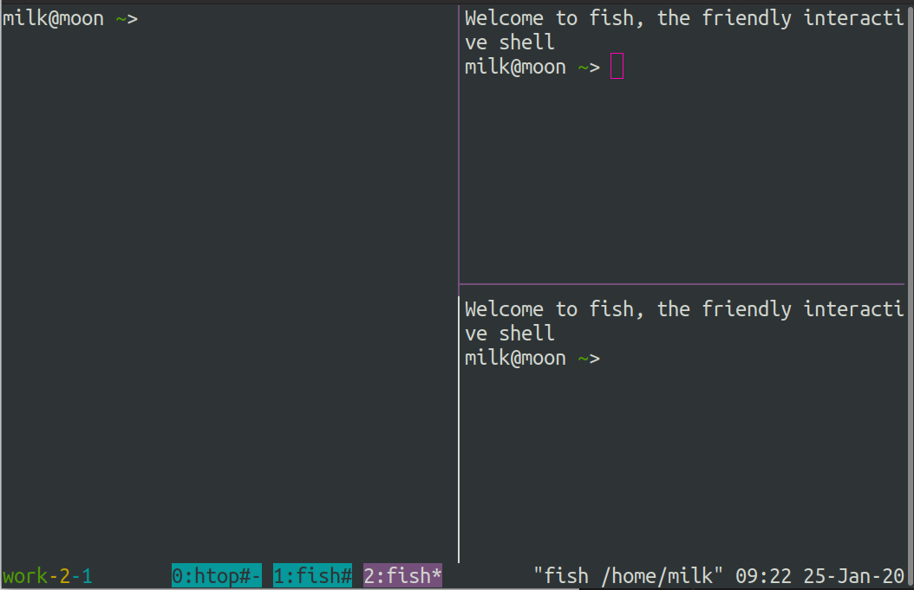

tmux美化
写在前面
更美观的 tmux 界面
参考:
tmux: Productive Mouse-Free Development
=======================
直接oh my tmux，懒人配置。一个字：赞！

大概界面
配置文件见文章末。
色彩配置
tmux 以 256 色模式显示内容
set -g default-terminal "screen-256colour"tmux 特定颜色变量
- black(黑)
- red(红)
- green(绿)
- yellow(黄)
- blue(蓝)
- magenta(品红)
- cyan(蓝绿)
- white(白)
其它: colour0 ~ colour255
简单 shell 脚本选择颜色
for i in {0..255}; do
printf "\x1b[38;5;${i}mcolour${i}\n"
done状态栏颜色
默认配色: 亮绿色背景, 黑色字体
# 黑色背景, 白色字体
set -g status-style fg=white # 前景色
set -g status-style bg=black # 背景色窗口列表配色
setw -g window-status-style fg=cyan # 活动窗口颜色为蓝绿色setw -g window-status-current-style fg=white
setw -g window-status-current-style bg=red命令行配色
set -g message-style fg=white
set -g message-style bg=black
set -g message-style bright改变面板分隔符配色
set -g pane-border-style fg=white
set -g pane-border-style bg=green
set -g pane-active-border-style fg=red
set -g pane-active-border-style bg=green定制状态栏
tmux 状态栏能显示非常多的信息, 通过执行 shell 命令使用预定义的组件(components)或者创建我们自己的组件
状态栏组件
- 左面板(status-left)
- 窗口列表(status-justify)
- 右面板(status-right)
| 变量 | 描述 |
|---|---|
| #H | 本地主机的主机名 |
| #h | 本地主机的注记名, 无 domain |
| #F | 当前窗口标签 |
| #I | 当前窗口的索引 |
| #P | 当前面板的索引 |
| #S | 当前会话的名称 |
| #T | 当前窗口的标题 |
| #W | 当前窗口的名称 |
| ## | 一个#符号 |
| #(shell-command) | shell 命令的第一行输出 |
| #[attributes] | 要改变的颜色或属性 |
其它:
时间采用 strftime 格式
| 变量 | 描述 |
|---|---|
| %a | 星期几简写 |
| %A | 星期几全称 |
| %b | 月份简写 |
| %B | 月份全称 |
| %c | 标准日期时间串 |
| %C | 年份前两位数字 |
使用示例
set -g status-left "#[fg=green]#S#[fg=yellow]-#I#[fg=cyan]-#P"状态栏开启 UTF-8 支持
set -g status-utf8 on状态栏的实时更新
set -g status-interval 60s窗口列表居中显示
set -g status-justify centre窗口活动通知
setw -g monitor-activity on
set -g visual-activity on配置文件
set -g default-terminal "screen-256color"
set -g status-style fg=white
set -g status-style bg=black
setw -g window-status-style fg=cyan
setw -g window-status-current-style fg=white
setw -g window-status-current-style bg=magenta
set -g pane-border-style fg=white
set -g pane-active-border-style fg=magenta
set -g message-style fg=colour186
set -g message-style bg=black
set -g message-style bright
set -g status-left "#[fg=green]#S#[fg=yellow]-#I#[fg=cyan]-#P"
set -g status-justify centre
setw -g monitor-activity on
set -g visual-activity on
comment:
- Valine
- LiveRe
- ChangYan